Introduction
This portfolio demonstrates hands-on experience with key Amazon EC2 features. Each section documents a practical implementation of different EC2 capabilities, including IP addressing, placement strategies, network interfaces, and hibernation. These demonstrations highlight my ability to configure and optimize EC2 instances for various real-world scenarios.
IP Addressing
Elastic IPs
Placement Groups
Network Interfaces
Instance Hibernation
AWS Networking
IP Address Behavior in EC2
Demonstration Overview
In this demonstration, I explored the behavior of public and private IP addresses in EC2 instances, specifically focusing on: - Connecting to instances using public vs. private IPs - Observing IP address changes during instance restart cycles
Implementation Steps
- Launched an EC2 instance with both public and private IPv4 addresses
- Successfully connected to the instance using the public IPv4 address via SSH
- Attempted (unsuccessfully) to connect using the private IPv4 address from outside the AWS network
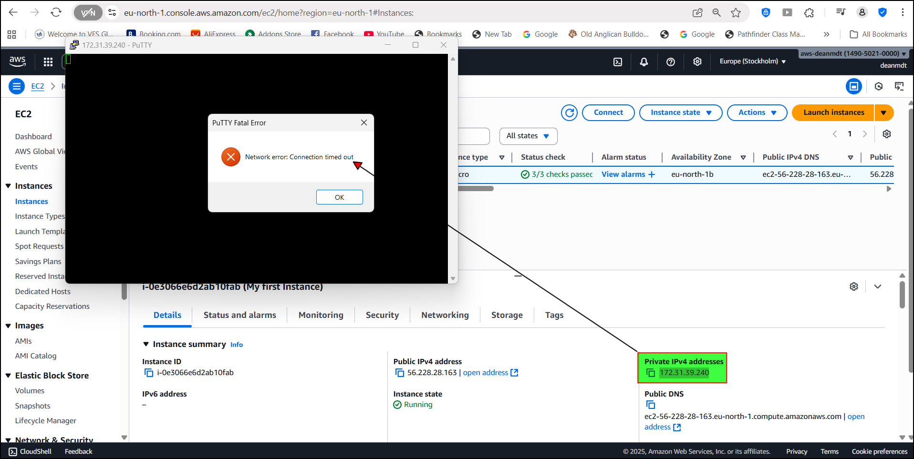
- Stopped and restarted the instance to observe IP address behavior; public IP before stopping: "56.228.28.163"; after staring it: "13.61.2.30"
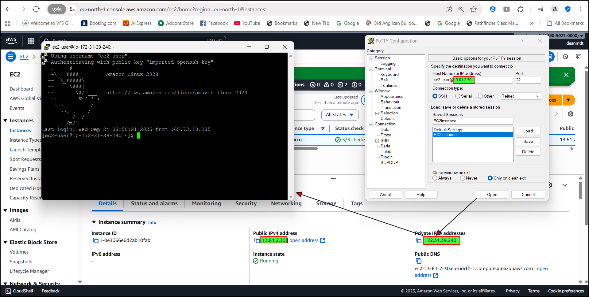
- Documented the public IPv4 address change while the private IPv4 remained static
Elastic IP Configuration
Demonstration Overview
This demonstration addressed the limitation of changing public IP addresses by implementing Elastic IPs, focusing on: - Allocating and associating Elastic IPs with EC2 instances - Testing IP persistence during instance stop/start cycles - Understanding Elastic IP pricing implications
Implementation Steps
- Allocated a new Elastic IP from Amazon's IPv4 address pool
- Associated the Elastic IP with a running EC2 instance
- Confirmed the public IPv4 address now matched the Elastic IP value
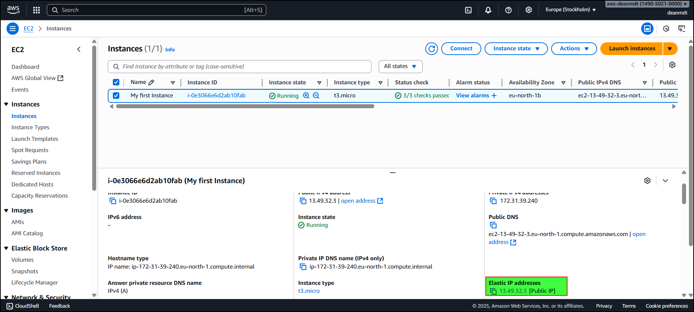
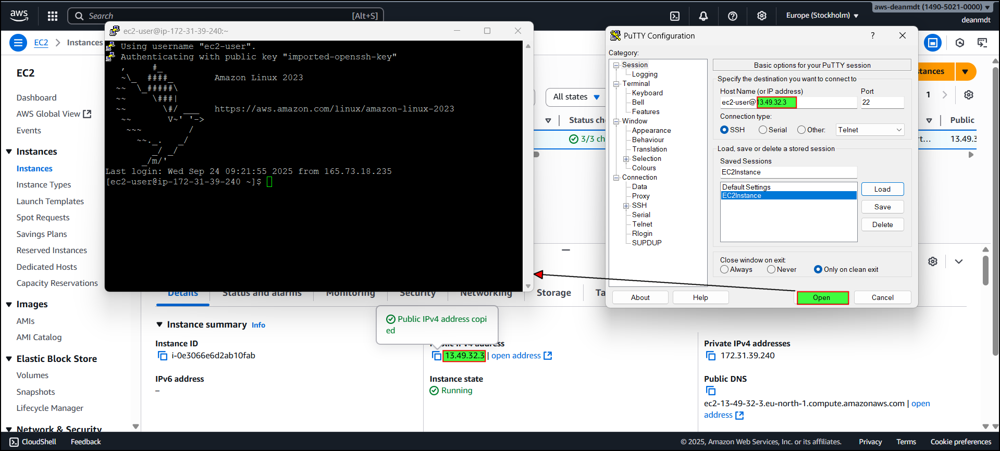
- Stopped and restarted the instance
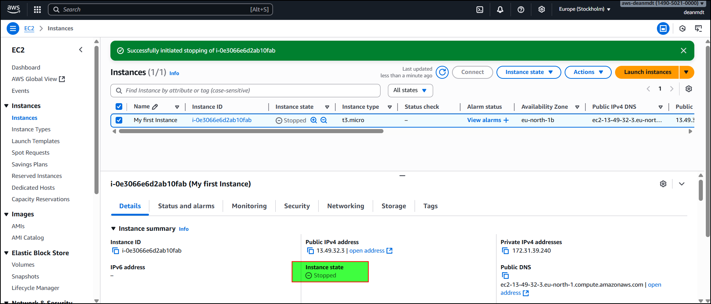
- Verified the public IPv4 address remained unchanged
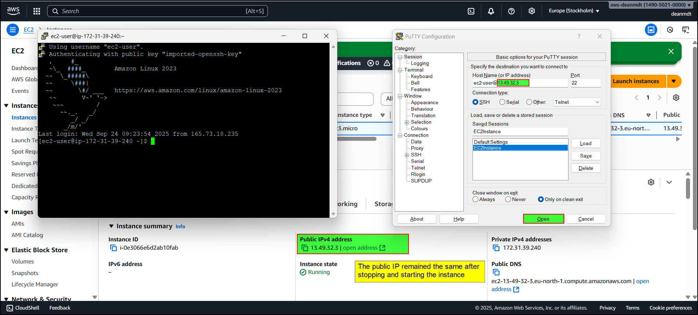
- Disassociated and released the Elastic IP to avoid charges
EC2 Placement Groups
Demonstration Overview
In this demonstration, I configured different placement group strategies to optimize instance placement according to specific requirements: - Cluster placement for high-performance computing - Spread placement for critical applications - Partition placement for distributed workloads
Implementation Steps
- Created three different placement groups:
my-high-performance-group using the cluster strategymy-critical-group using the spread strategy (rack level)my-distributed-group using the partition strategy (4 partitions)
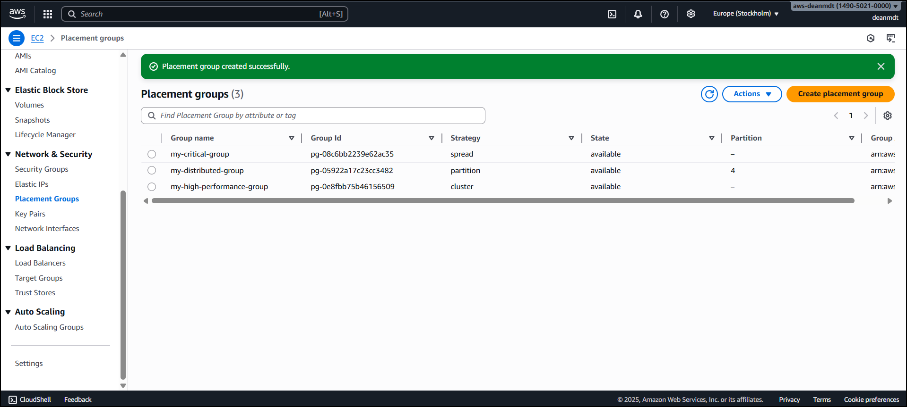
- Demonstrated how to launch instances within each placement group
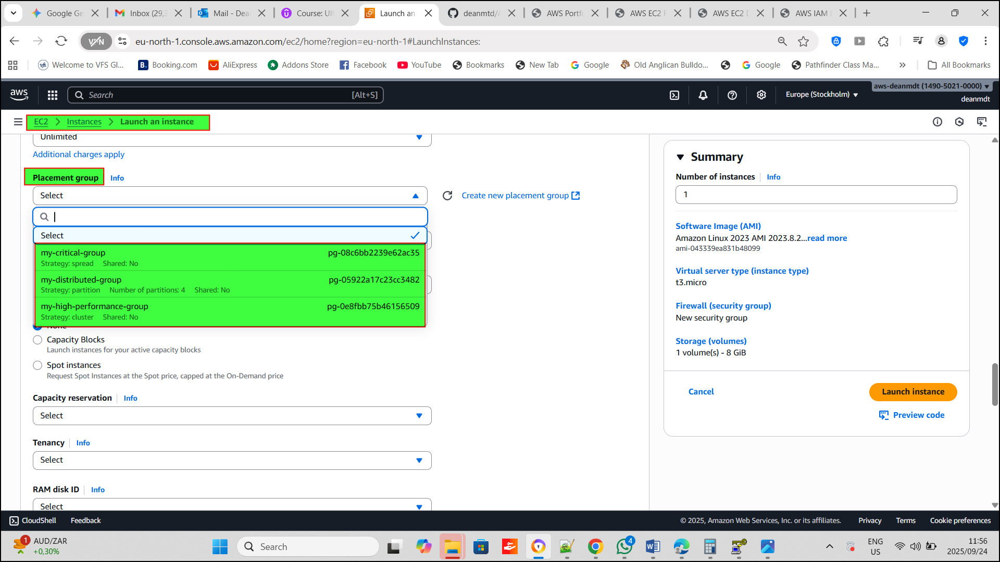
Elastic Network Interfaces (ENIs)
Demonstration Overview
This demonstration explored the creation and management of Elastic Network Interfaces for advanced networking capabilities: - Creating and attaching custom ENIs to EC2 instances - Implementing network failover by moving ENIs between instances - Understanding ENI lifecycle management
Implementation Steps
- Launched two EC2 instances, each with a primary network interface
- Created a custom ENI with a description "demo ENI"
- Selected an appropriate subnet and security group
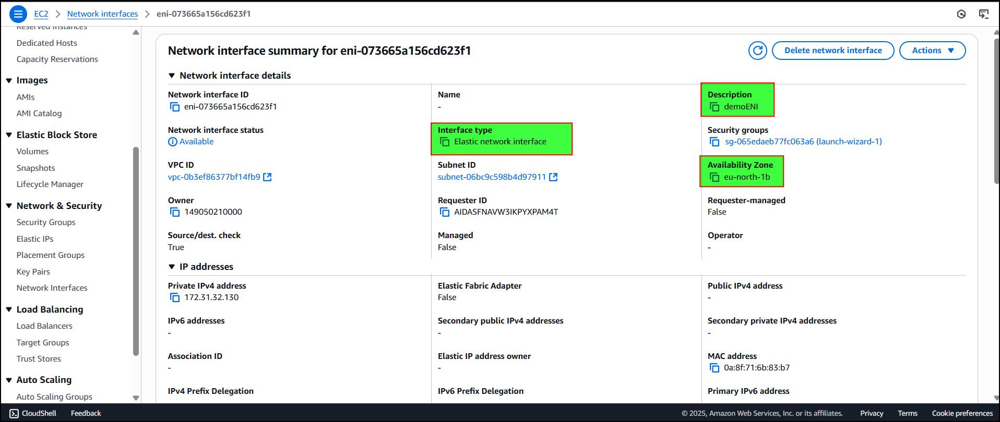
- Attached the custom ENI to one EC2 instance, providing a secondary private IP
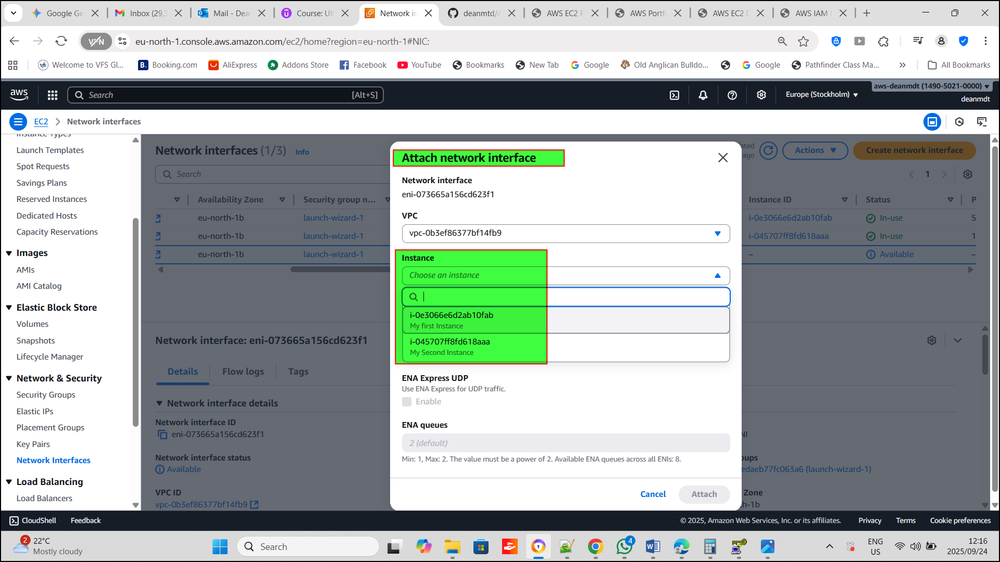
- During a failover scenario, the ENI and can be detached from the one instace, and then attached to the second instance (using force detach)
- Attached the custom ENI to my second instance
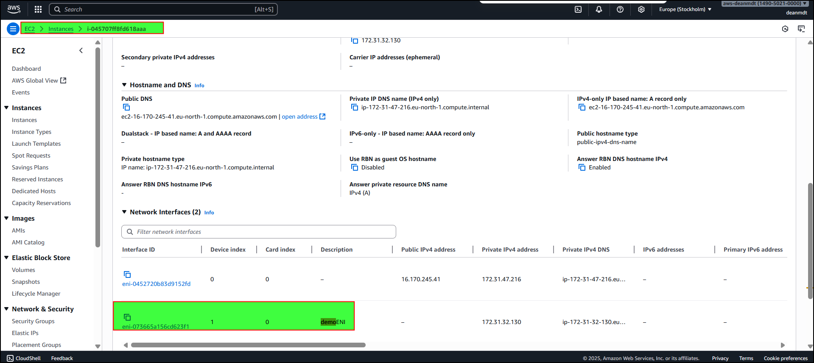
- Terminated both instances and observed ENI behavior; the demoENI remains, allowing you to re-use for future use cases and more control over ENI assignements
EC2 Hibernate Feature
Demonstration Overview
This demonstration implemented and tested EC2 hibernation to preserve instance state between stop/start cycles: - Configuring hibernation requirements - Testing the preservation of RAM state - Verifying hibernation using the uptime command
Implementation Steps
- Launched an EC2 instance with hibernate behavior enabled
- Ensured the root EBS volume was encrypted
- Verified adequate storage for RAM contents (8GB volume > 1GB RAM)
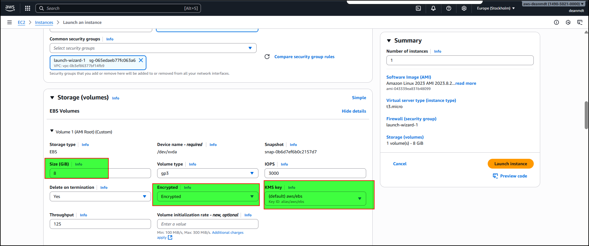
- Connected to the instance and ran the uptime command
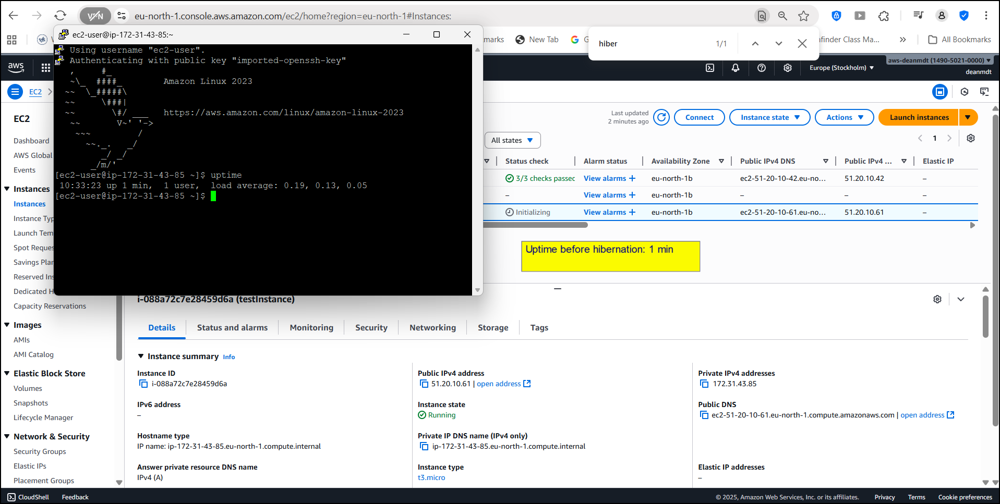
- Hibernated the instance
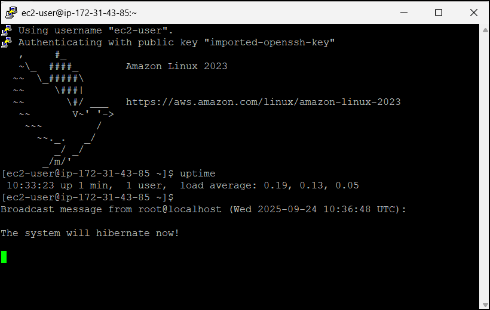
- Started the instance again
- Verified that uptime continued from before hibernation
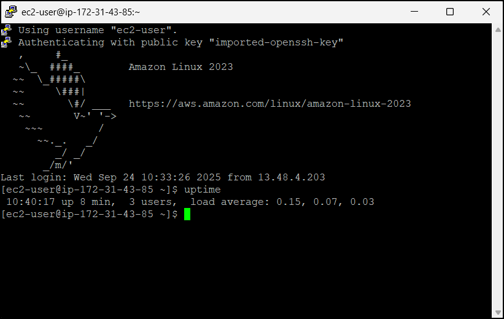
Conclusion
This portfolio demonstrates practical experience with key AWS EC2 features that are essential for designing robust cloud infrastructure. Through these hands-on demonstrations, I've developed skills in:
- Managing IP addressing and connectivity
- Optimizing instance placement for performance and availability
- Implementing advanced networking through ENIs
- Utilizing hibernation for state preservation
These capabilities enable the creation of EC2-based solutions that are reliable, performant, and cost-effective for a wide range of business applications.